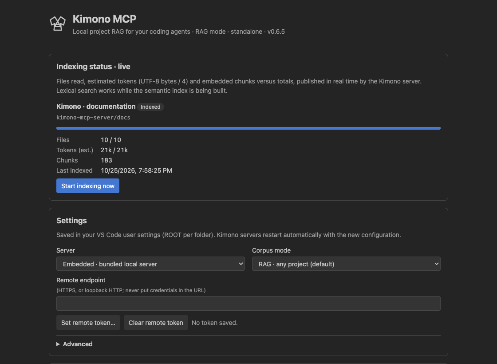
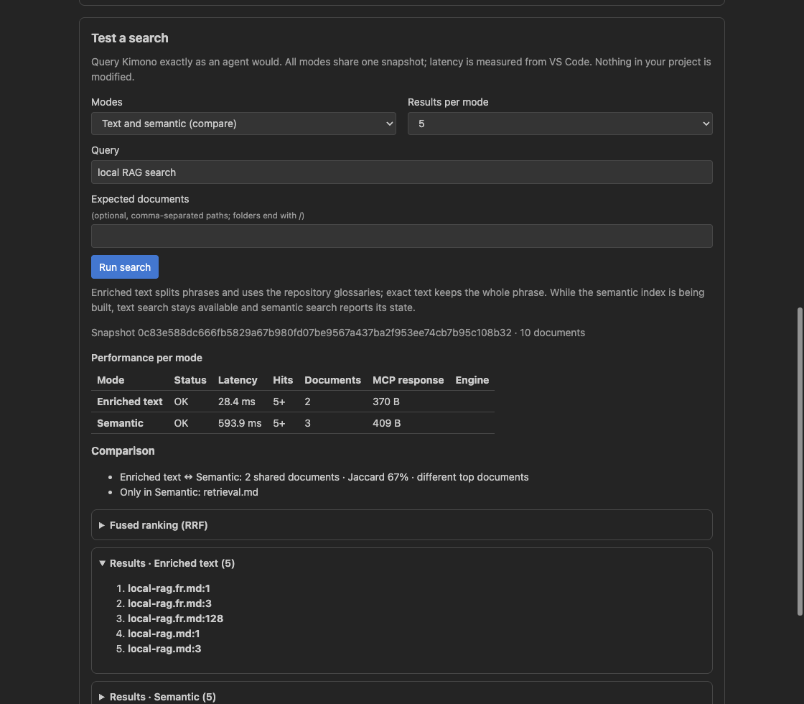

Less searching, more progress
Find a business rule, configuration or feature implementation without manually opening a succession of files.
Your assistant does not need to read everything to help you. Kimono finds useful passages in your code and documents, so it can focus on your question rather than entire files.
Less unnecessary context during research, less waiting to move forward. Use Kimono with your usual assistant, on an existing project or your AI-KIDO Memory Bank.
Available on the Visual Studio Marketplace · Local search · RAG mode leaves your files unchanged
Before answering or planning a change, an assistant explores your project. Kimono targets this phase: locate the right sources, then read only what actually helps move the task forward.

Find a business rule, configuration or feature implementation without manually opening a succession of files.
Kimono points to relevant locations. Your assistant retrieves the passages it needs instead of accumulating entire files in the conversation.
Make your code, documents and AI-KIDO knowledge easier to find. The method organizes the memory; Kimono helps your assistants use it.
Two tasks, the same corpus and the same model: standard Copilot search compared with Kimono RAG. The gains shown are cumulative input context and elapsed time, not an estimated bill.
| Work phase | Cumulative input tokens | Token reduction | Elapsed time | Time reduction |
|---|---|---|---|---|
| Research indexing and ignore rules | 323,368 → 105,223 | −67.5% | 111.212 s → 79.077 s | −28.9% |
| Prepare an implementation plan | 454,796 → 130,244 | −71.4% | 175.224 s → 84.034 s | −52.0% |
Gemini 3.8 Flash · Copilot CLI 1.0.103 · Local lexical RAG · 51 identical files · One run per method and task. Input tokens are cumulative across model requests, including cache-read tokens. Read the protocol and detailed results.
Sending less irrelevant content to the model is a lever for managing consumption during exploration. Measure it on your own tasks and models.
In these trials, tool calls fall from 22 to 8 for research and from 30 to 8 for planning. The assistant spends fewer exchanges gathering context.
TCO includes model consumption, working time, setup and operations. Kimono addresses context retrieval; the overall benefit needs evaluation in your environment.
Fewer tokens do not automatically mean a bill reduced by the same percentage. Cost depends on your provider, model, caching and subscription. Include local indexing time and resources in your assessment too. These two trials do not guarantee the same gains on every project and do not measure full TCO.
Kimono gives your assistant local search: that is the idea behind RAG, retrieving useful information before answering. No project reorganization is needed to get started.
Find the code, explanations and configuration behind your question, even if you do not know the filename.
Give the assistant relevant passages for its analysis and plan. Keep control of the next steps in your working environment.
AI-KIDO mode makes structured knowledge, personas, commands and workflows available so your team can reuse its practices.
A decision in meeting notes, a budget in a spreadsheet, a rule in a presentation: your documents are part of your project's context too.
Search text in supported Word documents, Excel sheets, PowerPoint presentations and PDFs without manually converting them for your assistant.
Kimono locates useful information and lets the assistant read its text representation. You keep your originals unchanged.
When text cannot be extracted, the filename, location and available file information can help you find it. Kimono reports the limit rather than inventing content.
Document features added in version 0.6.6: update your installation to use them. PDF text must be extractable; scanned documents may need preparation. Search respects your corpus exclusions. Supported formats and usage guide.
The management panel lets you check that your project is ready, choose your corpus and test a search before giving your assistant a task.


Start with a project you know. Compare the sources found and decide where Kimono saves you time.
Add Kimono RAG MCP by AI-KIDO from the Marketplace. Components needed for project search are included.
Trust the folder in VS Code, then run MCP: List Servers, start Kimono and enable its tools in your assistant.
Ask where a feature lives or how a rule works. Open Kimono: Open Management Panel to monitor indexing and test search.
RAG mode works with an ordinary project. For your Memory Bank, select AI-KIDO mode in the panel and choose your knowledge-base folder.
VS Code 1.106 or later and an MCP-capable assistant. Available hosts: macOS Apple Silicon, Linux ARM64/x64 and Windows x64. For remote environments, install the extension on the project host. Detailed installation guide.
“Use Kimono to find where this project's configuration rules are defined and explain the relevant passages.”
“Use Kimono to identify files affected by this change and propose a plan based on the sources you find.”
“In our AI-KIDO base, find the practice or workflow that fits this task.”
Your assistant must have Kimono tools enabled. It remains responsible for answers and execution; check its sources and approve actions as usual.
Use Kimono locally or connect several assistants to a shared corpus. Everyone finds the same references without circulating more copies of your documents.

AI-KIDO structures knowledge and practices. Kimono makes them easier to find. Platforms such as Tatami can integrate it into their workspaces; that integration remains separate from the standalone extension.

The VS Code extension is the simplest starting point. Other installations let you share a server or use another MCP-compatible assistant.

Install the extension and work on the open project, without deploying a separate server.
Start in VS Code →A Docker server shares a corpus and its search. Your team chooses hosting and access.
Shared server guide →A native installation connects a compatible assistant locally. Dedicated direct LLM CLI integrations are planned, not yet shipped.
Other ways to use Kimono →RAG mode searches and reads without modifying your project. Your assistant retains its usual permissions; Kimono does not choose actions for you.
Choose which folders to index and review exclusions. Indexing is local, but the assistant may send retrieved passages to its model provider.
Start with a recurring task. Compare time, context consumption and source relevance before rolling it out to the team.
Kimono does not scan contents for secrets. For a shared server, have hosting and access reviewed. Read limits and recommendations.
Install Kimono, open your project and ask your assistant to find what it needs. Observe the sources, context consumption and time saved.